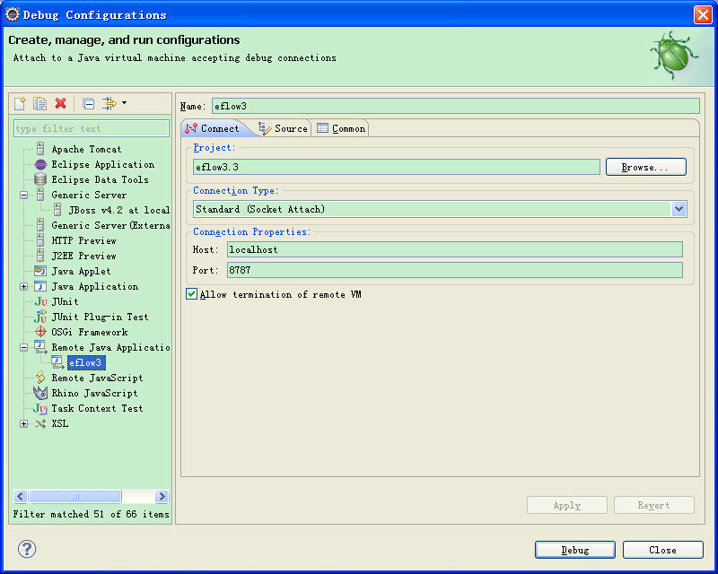

中间件
Jboss
打开jboss的安装目录\bin\run.bat 使用文本编辑打开找到1
set JAVA_OPTS=-classic -Xdebug -Xnoagent -Djava.compiler=NONE -Xrunjdwp:transport=dt_socket,address=8787,server=y,suspend=n
Weblogic
打开weblogic应用安装路径启动脚本文件 我的是 D:\bea\user_projects\domains\base_domain\bin\startWebLogic.cmd
使用文本编辑打开startWebLogic.cmd 添加如下设置1
set JAVA_DEBUG=-Xdebug -Xnoagent -Xrunjdwp:transport=dt_socket,address=8787,server=y,suspend=y
在将参数 JAVA_DEBUG加入到下面脚本当中1
%JAVA_HOME%\bin\java %JAVA_VM% %MEM_ARGS% %JAVA_OPTIONS% -Dweblogic.Name=%SERVER_NAME% -Djava.security.policy=%WL_HOME%\server\lib\weblogic.policy
最后如下1
%JAVA_HOME%\bin\java %JAVA_VM% %JAVA_DEBUG% %MEM_ARGS% %JAVA_OPTIONS% -Dweblogic.Name=%SERVER_NAME% -Djava.security.policy=%WL_HOME%\server\lib\weblogic.policy %PROXY_SETTINGS%
Eclipse
